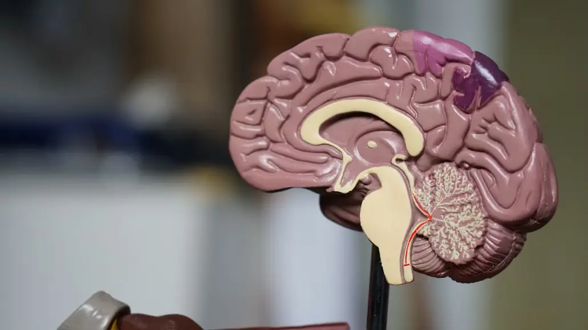

Introduction
Artificial intelligence has skyrocketed in the past few years. We have recently entered the generative AI era, with ChatGPT released in 2022 and Gemini following in 2023. It has become the norm for people to use AI for everything — schoolwork, personal issues, or any random question? Just ask ChatGPT!

But have we really thought about what this means? When we talk about the consequences of AI, some people’s minds wander to their job becoming obsolete, or worse yet, robots overthrowing humanity.
In reality, the consequences of overusing AI are far less obvious. Things like:
- Receiving misinformation
- Reduced critical thinking skills
- Large amounts of water wasted
Because of this subtlety, it can be hard to realise that using generative AI is harmful. This website aims to convey the reasons why you should lessen (or stop entirely) your usage of generative AI.
How Does It Work?
AI is everywhere and we often don't even realise it. Google translate, Siri, robot vacuum cleaners, even search engines themselves are just forms of artificial intelligence. But how does this AI work?

There are many different types of artificial intelligence, but when we are talking about generative AI like ChatGPT, we would be talking about large language models (LLMs). LLMs process and generate text: one could answer questions, one could translate languages, one could summarize documents, etc.
The ‘T’ in ChatGPT stands for transformer. Transformers are a type of model that ‘transform’ an input sequence into an output sequence. Not all LLMs are transformers, but the vast majority of them are.
LLMs train on billions of words from books, websites, articles, and more. Text is broken down into ‘tokens’ which are smaller units such as words. This tokenization standardizes the language so rare words can be handled consistently.
These tokens are then passed through a transformer network that, uniquely, can ‘pay attention’ to different tokens at different times. To put it very simply, transformers turn these tokens into numerical vectors in order to calculate their relationship to each other. Eventually, they predict which token comes next in order to form a final output sentence.

ChatGPT can not think. In essence, it predicts words one after the other to form a sentence — what it produces is not necessarily correct information. It should not be viewed as something to just have a conversation with, and as a tool it should be used very carefully. In the next section, we will explore the cognitive effects that too much generative AI usage can have on your brain.
Cognitive Effects
Because generative artifical intelligence is so new, we are only just discovering all the side effects that come with using it. One thing we have recently uncovered is that overusing generative AI can have detrimental effects on your brain. Whether you ask it to come up with ideas, generate text, or summarise documents, these small acts add up.

Cognitive offloading refers to using external tools to reduce the cognitive load on your brain. While this can be helpful, it may also lead to a decline in mental engagement and cognitive abilities. AI is a quick and easy way to get things done, which discourages users from actively thinking and developing critical thinking skills. This study investigated this idea and found there was a “significant negative correlation between frequent AI tool usage and critical thinking abilities.”
The human brain needs to be exercised. Relying on AI to do things for you means you are denying your brain exercise, which weakens it over time. If, for example, a student uses AI to do work for them, they aren’t actually learning and growing. The mental stimulation that comes from actually using your brain is vital to your health and helps prevent dementia, Alzheimer's, and more.

A model of the humam brain.Overall, overusing (and incorrectly) using generative AI can have negative effects on your brain (the most important organ!). However, this isn’t the only bad thing about it. What about the environmental impact AI has?
Environmental Effects
The other major consequence of using generative AI is how greatly it impacts our environment every single day.
Generative AI runs many complex calculations to understand and respond to requests. This takes a lot of water to run, primarily due to cooling systems in data centers. The servers that power AI systems generate a lot of heat during operation, so water is used to cool them down.

According to Sam Altman, the CEO of OpenAI, the average single interaction with ChatGPT uses 1/15 of a teaspoon of clean drinking water. This doesn’t sound like a lot, but it adds up. About 1 billion messages are sent to ChatGPT every day, meaning every day — from ChatGPT alone — around 328,594 litres of water is wasted. Some even speculate that Altman is downplaying the amount of water used, meaning it would be even more!
Water is a finite resource and a necessity that not everyone has access to. This amount of water being unnecessarily wasted needs to be stopped.
Another way that using generative AI affects the environment is the amount of energy it uses. The computational power required to train AI models leads to an immense amount of electricity being used. The rise of generative AI has meant that electricity demands have increased greatly, from North American data centers using an estimated 2,688 megawatts at the end of 2022 to an estimated 5,341 megawatts at the end of 2023. By 2026, these data centers are expected to place 5th out of the largest energy consumers in the world.
This energy usage produces a lot of carbon dioxide. Researchers estimated that training GPT-3 emitted roughly 500 metric tons of carbon dioxide — and that’s just for the training of one model. Excess carbon dioxide directly leads to global warming and is not something we should take lightly. Generative AI is destroying our planet.
Convinced yet? The next section covers ending your personal AI use.
How To Stop
There are so many negative side effects of overusing generative AI, but how are some ways we can stop? Here are some things to keep in mind:
- When you plan to ask gen AI something, consider whether or not you could google it or find the answer yourself. Remember that the goal isn’t always the outcome, but your own cognitive growth.
- Consider switching to a different search engine to get rid of that pesky AI overview. Ecosia uses its profits to plant trees!
- Think about spending less time on the internet overall. Because AI is so engrained everywhere, it can be hard to avoid it. Take the time to figure out what you really want to get out from the internet
- If there’s something you absolutely need to use AI for, minimize your words (no please and thank you. LLM’s are not sentient.) This minimizes your impact on the environment and maximizes your efficiency
Overall, generative AI is a powerful tool. But we have to remember that, although it is amazing, there are major consequences we need to be aware of.